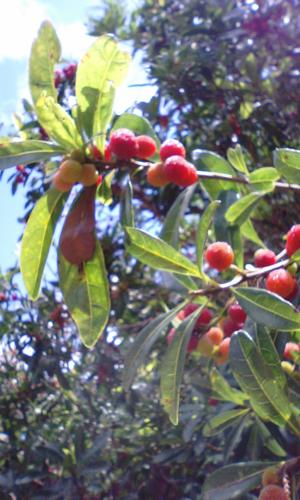

うるがいの話 ある日
最新: 本日は精神科【うるがいの話 ある日】とは 一日だけのプログです
『うるがいの話』の最新一日だけのプログで、通信料が少なく経済的だ。カニの画像をクリックすると全ての日付が載る『うるがいの話』サイトを表示します
|
|
【うるがいの話】 うるがい(ｳﾙｶﾞｲ urugai)とは、『もずくがに』の名前でとても大きくなります。 |
|---|---|
|
|
【カミマヤーの話】 猫のことを方言でマヤーといいます。カミマヤー（kamimayaa）とは、神の猫のことです。 |
|
【たながぁの音楽】 たながぁ（ﾀﾅｶﾞｰ tanagaa）とは手長えびのことで、何種類かあり大きいのは車 エビぐらいになります。 |

|
【ぶながぁの話】 ぶながぁ(ﾌﾞﾅｶﾞｰ bunagaa)とは、赤い髪の毛、赤い身体、そして身長は１ｍ２０ｃｍ ぐらい、川の蟹を食べているの目撃された。場所は沖縄県国頭郡大宜味村のと ある村僕の隣近所に住んでいる爺さんから、聞いた話です。 |
|
|
【ギーマの話】 ギーマ(giima)とは、山原の里山に咲くスズランに似た、 花を付けます。実は食べられます、 気が付くと口の周りが紫になっています。 |
2024年06月11日 (火）本日は精神科
15:15

『今日は１１日ですが、予約は来月の１１日です！』、そこをなんとかこの
雨なかをきたのですから、なんとかなりませんか、『薬もあとひと月ありま
す、ダメです』。７０才を超える兄弟のような男性達が、受付とバトルして
いた。誰が、患者なのか分からなかったと、お義母さんの診察に付き添った
ヨメが楽しそうに話した。昨日に続き、今日は精神科である。雨が降り続け
る中だったが、車を乗り降りする箇所は濡れない場所で良かった。昨日の県
立病院では、駐車場から病院へ入るまで距離があるので雨が降ったら大変だ
った。実際、県立病院へ入るときは、曇り空で雨が降る様子がなかったので
傘を持たず入った。病院で検査待ちをしている１１時ごろ、にわか雨がザー
ザーと長い間降った。どうしよう・・・、病院を出る頃に雨が止んでいた。
こうもり傘を準備していた方が、いいと思った。なお精神科の石川先生は大
雨のせいで９時半に診察予定が、１０時なったと。ホー、医者も遅刻するの
か。
私が、大学４年生のとき丸ボーズをしたときがあって、アル中の姉を田崎病
院へ診察に連れていったとき、診察室で先生が、私に向かっていろいろ病状
を確認する。はて？、診察は姉ですが？。
お土産もって来てねとまだ小さい子供たちに見送られ、中部の結婚式場へい
ったら、大学の同級生の名前がある案内がない！、結婚式場の人に確認して
もらったら来月ですと言われた。精神科へきた７０代の兄弟と一緒です。
この経験を、お義母さんに話すと嬉しそうにしていた。
１５時１２分 ビットコインの総資産 ￥３１、０１３（↓６４１）